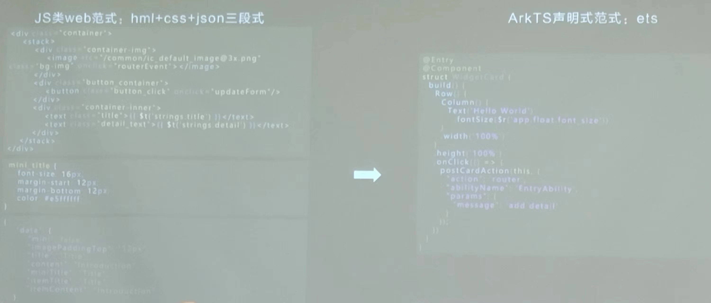

2023 HDC 参会笔记与感悟
Author: SJTU-XHW
Language: Simple Chinese
License: CC BY 4.0
本人学识有限，内容难免有错，恳请读者能够批评指正，本人将不胜感激！
注：在笔记的 这里 你可以体验有趣的 WebXR 的项目 Demo ~
8 月 4 日
主会场：HarmonyOS 4 与 SDK 主题演讲
一、 Harmony 4 UX 设计
系统输入法表情更新：上千个专属定制的
unicode表情符号，精细化表情符号所代表的语义；- 举例：一碗面条所对应的表情就有 4 种之多，提供 “宽面”、“窄面”，“拌面”、“汤面” 之选择；
- 结合 HarmonyOS 4 图像识别处理的技术，用户可以 定制 “以自己主角” 的壁纸、主题，体现个性化界面设计之美；
- 系统界面 UI 焕然一新，同时给用户和开发者提供更多不同的窗口组件；
二、 Security
细化权限控制粒度，最小化权限给予。将应用权限交由用户决定；
- 举例：用户不允许透露的信息（如通讯录），可以采取提交 “虚假信息” 或者空信息的方法；
优化应用行为跟踪的逻辑，可以由用户自己决定是否要关联；
三、 Widget
- 通知栏不仅仅按时间排序，更按种类归类，区分轻重缓急，不会胡乱堆砌；
- 窗口小组件 和 负一屏 连通各个应用，例如快递/外卖的进程，天气组件关联桌面壁纸等等；
- 应用流转，如分布式相机，端到端间 各种文件在各个界面的拖放/拉取；
四、 小艺
- 接入盘古大语言模型，提供模糊意图支持，语音书写通讯录、车辆设备控制……
- 低代码编程能力：语言/文字输入意图，例如语音定制一个有特殊用途的桌面卡片组件（2 周前纪念日提醒等等）；
五、 Software【方舟引擎】
- GPU Turbo + 微内核调度 开销下降；
- 超帧方舟游戏引擎：编码加速、极速休眠；
- 超空间存储压缩引擎、动态内存引擎；
- EROFS 文件系统；
- 拒绝 Linux 4k 小内存页管理，创新 4K、8K、16K、64K 的动态内存页管理，优化资源利用率；
六、 合作伙伴发言 & 应用案例
- 中国农业银行、网易、去哪儿旅行……
七、 SDK
便捷性：几行代码轻松设计配合系统 UI 的应用控件；
- 案例：配合系统原生 UI 和 原生大模型接口，添加一个自定义信息显示卡片；
独创 ArkTS 语言、方舟编译器及一系列开发套件，规避 JS-TS 开发生态的不足之处；
- 结合 DevEco Studio，把模型接入开发、调试过程中；
- 自动利用系统的大语言模型，帮助各个应用更智能地与用户交互；
8 月 5 日
课程、论坛的种类很多，我只选了其中的两个论坛听；
Forum 1 Harmony 应用开发-新能力
一、 ArkUI
ArkUI 框架功能集
组件节点能力提升
- 细粒度组件分层设计，优化视觉 & 交互效果；
- 轻量级图文混排的效果优化；
- 实时模糊效果，多种模糊材质可以选择；
- 组件级共享元素动画，页面内一镜到底；
视觉 & 动效增强
- 可动画属性增多，更多开发自由度；
- 强大的拖拽能力，提供文件中转站；
- 更多开箱即用的组件工具，更多惊艳的视觉效果；
二、 智慧生活应用 ArkUI
- 设备详情页实现方式：95% 终端设备（台灯/空调/打印机等）采用 H5 设计；5% 终端设备（路由器/摄像头等）采用原生平台开发，多平台，维护成本高；
- “一次开发、两次编译、三平台部署”；
- 总结：ArkUI 跨平台框架开发的优势
- 性能：Harmony OS 原生渲染，Android / iOS 自渲染，持平竞品；
- 成本
- 统一 ArkUI 范式，不需要额外框架；
- 声明式 UI 框架、丰富 UI 组件；
- 能力
- 支持动态加载，版本与宿主解耦；
- 跨平台支持 *.so 库，降低宿主 ROM 占用；
三、 ArkUI 跨平台方案的实现
ArkUI 的架构
新一代跨平台框架：ArkUI-X；
- 扩展 ArkUI 支持跨平台的开源项目；
- 一次开发，多平台运行；
- 高性能方舟运行时 + 方舟渲染引擎；
- 生态统一的跨平台 API 能力集 + 扩展机制；
- 开发友好便捷，高代码复用性；
命令行工具 ACE Tool 的使用
DevEco Studio IDE：跨平台 SDK 支持，运行时开销监测
- 应用开发能力：Stage 模型 + Resource 支持 + 特化 UI 组件 + 支持 25+ 种 标准插件的 API；
- 应用测试能力：将资源检测、热点函数监控、行数定位的能力引入 IDE；
- 支持按模块集成（支持构建共享库）
四、 元服务
定义：面向万物互联时代 HarmonyOS 的一种为用户提供更便捷服务的轻量级应用程序新形态；
基于 HarmonyOS API 开发，支持 1 + 8 + N（手机 + 电脑/平板/车载屏等 8 个平台 + N 个其他设备） 设备；
特征：随处可及、服务直达（免安装，卡片信息）、跨设备；
增强技术特性
服务免安装提速：分包预加载；
卡片能力演进
- 统一 ArkUI 卡片开发范式；
- 卡片自定义能力；
- Push 刷新，卡片信息及时推送；

跨设备分享：元服务快速分享；
用户体验提升
- 元服务即点即用，服务直达；
- 服务卡片便捷交互，信息直达；
元服务应用案例
- 华为智慧生活；
- 讯飞听见，快速上线 + 图形翻译；
五、 HarmonyOS 性能体验优化
涉及性能的典型场景
- 启动：启动时延；
- 点击响应：响应时延；
- 滑动/动效：帧率 60/90/120；
编程模式影响
- 同步 和 异步：异步模式。避免阻塞主线程；
- 命令式 和 声明式：状态变量驱动 UI 变更；
关键流程
关键优化方向
语言
- 编码建议
- Taskpool 并行化
- AOT + PGO 方舟编译器优化
解析时间：60ms -> 0.725ms
UI
- 布局优化
- 节点复用
动效
- 图形动画优化：结合 Ark 动画引擎
后台
后台任务运行模型
六、 Cocos 验证 HarmonyOS 性能优化
背景介绍
- 游戏项目验证的原因
- CPU + GPU 利用率高；
- 对帧率敏感，不得低于 30；
- 第一个适配 OpenHarmony 的游戏引擎；
- 游戏项目验证的原因
性能优化之旅
- AOT 优化（Ahead of Time）：能够在 Host 端将字节码提前编译成 Target 端可运行的机器码，这样字节码可以获得充分编译优化，放到 Target 端运行时可以获得加速；
- 优化方向
- 保存并完善 TS 源码类型信息（因为 TypeScript 打包为 JavaScript 时丢失变量类型信息）；
- 使用 PGO（Profile Guided Optimization）定位热点函数；
实现路径
- 解决运行时问题；
- Profile 工具分析热点函数；
- TsAutoReturnType 自动补齐类型；
- 制定高性能编码规范；
七、 HarmonyOS 端云开放能力
- 华为账号接入；
- 软硬协同
- 统一扫码服务实现方案；
- Analytics Kit 能力框架；
- Ad API；
- Map 能力框架；
八、 媒体生态一致性
拍摄效果一致性
系统相机 和 第三方相机 的 不一致问题的解决
解决方案：
- 统一接口，统一流程，统一效果；
- 分离预览、拍照、录像操作流，明确数据流的用途；
音视频焦点、时延、播控一致性
- 音频焦点管理；
- 低时延播放；
九、 HarmonyOS 文件存储技术进展
- 端云一体的文件系统：统一数据管理框架 UDMF；
- 应用文件分享框架；
- 备份恢复框架；
十、 HarmonyOS 网络应用开发
- 蜂窝网络；
- HTTP 2->3；
- 指定 HTTP 合理优先级和数据类型；
- 建议支持 IPv4/6 双栈；
Forum 2 Huawei AR & VR
一、 产业背景 和 资源
Devices：
Head mounted displays
Controllers
Base station
- Body / hand / Object / Eye Tracker
- ……
- 想要获取 OpenXR 资源或者 API 文档：
二、 OpenXR
和 OpenGL 的地位很像，就是一种跨平台的 API 规范，适配各种标准 XR 设备；
X 仅仅是占位符，可以代表 AR，VR，Mixed Reality等
适配 Unreal、Unity 等游戏引擎；
最新应用：Kitware Paraview / Beat Saber；
工作小组：一致性测试（Conformance Test Suite），Input Device Plugin，5G/Cloud……
KHR / EXT：是否通过 CTS 验证的 lib；
OpenXR Resources；
三、 Metaverse
- 元宇宙的标准开发 与 元宇宙标准论坛：Metaverse Standard Forum (MSF)
四、 WebXR
Web 并不局限于浏览器，具有 UA 和 对应的数据类型
WebXR 基于 WebGL
W3C Immersive Web 的工作组和标准
- 开发资源 three.js + unity
Web XR Core 的 API 规范
五、 Web3D 助力 WebXR
WebXR 的背景
- Web3D 与 元宇宙同时产生于 1992 年；
- 元宇宙被称为新一代 3D 引擎技术；
- 元宇宙有互联网方面 3D 引擎的需求；
- 云渲染的计算/传输/运营成本大；
- 优势：用户的选择
- 易用便捷普通去中心化；
- 上线访问随时随地随意；
- 上线创作任意场景任意操作多人协同；
Web3D 的痛点剖析
总体量瓶颈：场景体量太大
- 网络带宽却实在有限，相对于3D规模与体量的扩张显得越来越狭窄；
- Web3D大数据的互联网传输之路永远都是一条 “窄路”；
文件粒度瓶颈：目前的场景文件结构没有考虑到网络传输
- 图形文件均以粗粒度模式来存储；
- 不利于网上在线加载与即时渲染的细粒度化调度处理；
- 网页端算力与缓存的双重受限；
- 传统的重量级粗粒度场景文件结构以及本地的场景管理需要改造；
网络传输瓶颈
- 初始加载时间过长，而用户容忍时长仅通常仅为秒级；
- 漫游时渐进式在线加载要流畅，因带宽堵塞而很容易导致网络瘫痪；
- 多人同步在线易造成服务器崩溃；
网页端渲染瓶颈
- 难以支撑在线渲染规模越来越大的场景；
- 难以达到在线实时全局光照的高品质渲染；
关键技术
下面的 “教授的网页演示” 比较有趣，可以点击探索 ~ 不保证网站永久有效 ~
总结
- OS层面：HarmonyOS 与轻量级在线 3D 关键技术融合；
- 浏览器层面：与轻量级 Web3D 引擎相融合；
- 通讯传输层面：三维元宇宙无穷大数据的部署与分布式传输调度协议；
六、 华为 AR
华为的 AR 生态：AR Engine 全球 Top3 AR 开发引擎；
Instant AR 实现快速放置虚拟物体
环境跟踪 和 光照估计、实时环境构建、图像锚定、语义跟踪、表面 Mesh 跟踪；
人脸跟踪和人体跟踪：面部表情，人脸 mesh，头部位姿矩阵，2/3D 骨骼，姿态识别，人体 mask；
开发框架
开发框架的难题
- 跟踪手机的位置姿态，统一虚拟坐标系和物理坐标系；
- 识别桌面，锚定虚拟物体；
- 提供手机相机的实时参数，统一渲染引擎虚拟相机的相应参数；
七、 华为 VR Engine
- VR 交互进展：手柄🎮交互，手眼交互【重要的是触觉反馈】，空间感知；
- 渲染领域：AI 画质增强，Smart Render 3.0【动态注视点，PTW】；
- VR Engine 的 XR 框架；
- 端到端空间视频设计方案 + 体积视频部署案例；
八、 Cocos CreatorXR
- Cocos 数字内容生产平台
- Cocos 开发工具链的优势特点
- Cocos 产品图谱
- CreatorXR 创作工具
- Cocos CreatorXR 的使用方法/工作流：5个步骤，一站式配置开发
- 集成了主流标准：WebGL OpenXR
- 同时支持：WebXR AR MR 构建创作
- 共建 XR 内容生态
- 持续为开发者提供完善快捷的跨平台开发工具；
- 总结
- Cocos 3D 引擎轻量高效跨平台，适用于车机、元宇宙、游戏等各种业务场景；
- CreatorXR 一站式创作工具，一次开发，多平台、多设备、多形式发布；
- CocosXR Runtime安全轻量低功耗，系统级运行容器，快速推动生态繁荣；
九、 Unity 打造高画质多交互的 XR 内容
- Unity XR 新架构优势
- Unity XR 开发者工具介绍
- XR Interaction Toolkit
- 视频功能展示：UI 交互，套件交互，物体抓取，注视交互（XR Gaze Interaction）；
- AR Foundation；
- MARS；
- XR Interaction Toolkit
- Unity XR 新增功能介绍和使用
- New Input System for XR；
- URP for XR；
- HDRP for XR；
- Unity XR 相关案例
8月 6 日
活动：Codelabs & 体育馆展区
- 所需技术：ArkTS（TypeScript 的超集），简单的项目认知能力，会看 OpenHarmony 的文档，了解 DevEco Studio 的基本使用；
- 本人参与的 Tasks 有：HarmonyOS 页面 Scroller 二级联动的实现、HMS Core ML QRCode 识别程序补全、HMS Core Swap 产品购买程序的补全、OpenGallery Connect 程序的低代码开发和 UI 设计；
附录 Ⅰ 快讯整理
2023 年 8 月 4 日，华为开发者大会（HDC.Together）开幕演说在东莞篮球中心成功举行。华为发布了 HarmonyOS 4 和 全新升级的鸿蒙开发套件。另外，HarmonyOS Next 开发者预览版本等一系列领先技术也为用户提供前所未有的革新体验。
5 至 6 日，HDC 在三丫坡开设了数个开发者论坛供来自各地的工程师和技术研究人员进行学习和交流讨论。另外，现场的多个地点还设置了多种趣味性十足的闯关和运动游戏，让参会者们在学习讨论之余放松心情、锻炼身体。
最为火爆的是位于 B3 区的 Codelabs 活动，将华为 ArkUI 和 ArkTS 语言融入编程趣味挑战中，提供不同代码量、不同难度的闯关赛题。在学习到最新的优秀语言的同时，还能获得大量丰富的奖励。
附录 Ⅱ 随笔 & 感悟
三天的时间一转眼就过去了，在东莞三丫坡召开的华为开发者大会在思维的碰撞和交流中落下帷幕。回顾这几天的经历，可以说是让我受益匪浅。会场内，来自不同国家的人们满怀激情和热忱，交流着技术观点；志愿者和工作人员在超过 30℃ 的天气下维护秩序、给参会者提供无微不至的帮助。
虽然目前我的学识有限，会议的内容我还无法全部理解，但是这里开放包容、开源共享的氛围，将激励着我努力学习，向我感兴趣的方向继续前进。
我要感谢这次会议跟随我们的吴老师、李老师，还有安排这次活动的老师和工作人员，他们在我遇到某些问题时及时、热心地协助我解决。没有他们的帮助，我可能就无法享受到这次的视听盛宴。
我所参加的两个论坛，一个在 ArkUI 方面为开发者介绍了一种新语言 ArkTS（衍生自 TypeScript），这为我们展开了贴近于 HarmonyOS UI 设计的新方法；另一个论坛向我们介绍了关于华为 AR & VR 方面的最新进展，基于 OpenXR 规范的 Web3D 和 鸿蒙 XR 的技术正不断成熟，开发生态也不断扩大。
在本次大会的讨论中，有几项技术让我比较感兴趣，其中一个是华为独创的 ArkUI 及其配套的设计语言 ArkTS，它是 TypeScript 的超集，包含了绝大多数 TS 的语法，并且集成了新的 features，像 @entry annotation，还有更新颖、简洁的 UI 声明语法。
相较于 HTML + CSS + JS 三件套组织形式，华为的 ArkTS 则简化了编写人员的技术栈，在一个编码文件中轻松 handle 了 HarmonyOS 的控件外观设计。
在 Codelabs 活动中，我也上手初步认识了这样的一个开发流程，通过 AppGallery 和 HMS Core 等项目的补充实现，让我深深体会到这项技术是如此的便捷和优雅。
此外，工作人员还向我们介绍了 HarmonyOS 的软总线技术。他们强调，这种华为独创的技术能够成功地支持 WI-FI / Bluetooth 双通道连接，并且在传输文件的同时，优先选择速度更快的通道，并且切换对用户无感知，保证当前最大的传输速率。这是 Apple 等厂商所不具备的技术。
现场的工作人员还强调，在工业应用场景中，HarmonyOS 软总线会更注重 海量设备互联、发送的成功率，以确保满足大规模流量的实际应用场景。
作为 HarmonyOS 其他繁荣的上层应用的基石之一，软总线不仅需要速度和质量，更要安全。OpenHarmony 俱乐部也同时关注机密软总线的底层技术，相信能够为 HarmonyOS 的软总线的进一步发展提供更多优秀的思路。
本次大会论坛的热点之一是华为 XR 技术，而同济大学的贾金原教授在 Web3D 和元宇宙方面所做的报告更是让我眼前一亮。从剖析 Web3D、WebXR 和元宇宙的背景和当前痛点出发，提供了数个全面提升视觉效果和渲染性能的算法。教授还在会上分享了多个超大规模的在线 Demo，同时具有十足的趣味性和启发性。
这次的 HDC 让我收获到了很多，可以说是不虚此行！
附录 Ⅲ 饮食 in 深圳/东莞
“ 有一千双手，就有一千种味道。中国烹饪，无比神秘，难以复制 ” —— 《舌尖上的中国》
茶餐厅比较有名。去里面吃饭貌似服务员会默认你带上一个饮品（奶茶/凉茶/红茶的种类挺多），好像是饮食习惯。平均单人价格 40+；
东莞这边的餐厅，汤汤水水的名称明显密集。让我极为震惊的是，汤的名字可谓各具特色——“川贝雪梨猪肺汤”、“五指毛桃猪骨汤”、“XX爪XX壳汤”（名字忘了），比较后悔的是没有拍个照片，每个汤的成分似乎都出在了我意料之外的地方（没有见识实锤，，
点名表扬 “XX鱼泡”（名字还是忘了），极薄的像馄饨皮一样的一层包裹着鱼肉丸，口感 Q 弹爽滑，还是比较吸引人的；
这里的卤味的“叉烧包”和我想象中的大相径庭：上海那边买到的叉烧包更像小煎包，大约是婴儿的拳头大小，可能灌汤；但这里的叉烧包更像馒头（不是指馅，指的是材质和大小），馅的话我点的是卤味，所以里面是 juicy 的五花肉和腊肠；
印象最深刻的是从内到外都呈现 淡瓦片颜色 的豆腐（不知道瓦片颜色的同学可以打开 “植物大战僵尸”，并从僵尸脸上取色）；味道比较奇妙，有一种腥味和豆腐原生的厚重的感觉杂糅在一起。很好奇是用什么手法做出来的，毕竟我见过的豆腐不都是白色的材质么。我们问了服务员做法是啥，服务员笑而不语（说吧，是商业机密还是科技狠活
这边有一种全新的烹饪方式我从未听说过：啫。说实话，菜单上有一片区域的菜名全部都以 “啫” 开头，我都误以为是加啫喱做出来的菜😂；晚上回去网上查了一下才发现这是粤菜的一种做法：
生啫是将生的食材直接投入瓦煲内，加入味料和酱料，全程大火干烧至熟，不加入一滴水，因此，这种技法对瓦煲的杀伤力非常大，上边是生冷的食材，下边是猛烈的旺火，在一冷一热的刺激之下，瓦煲用上一、两次就会出现裂缝，而有裂缝的瓦煲就不能再循环使用了，如果勉强上阵，上一次啫时渗入裂缝中的油和肉汁就会跑出来，那股异味会传到这一次的食材里面。
而熟啫则是由于有个别食材特别难熟、或韧度特别大，所以前期必须要先经过熟处理才能拿来啫。
小声说：我们点的 “啫芥兰” 用的锅就裂开了，事后回想起难怪味道比较奇怪……
附录 Ⅳ 大会园区美景
图片由本人摄制。篇幅有限，只展示一部分。


 wechat
wechat alipay
alipay